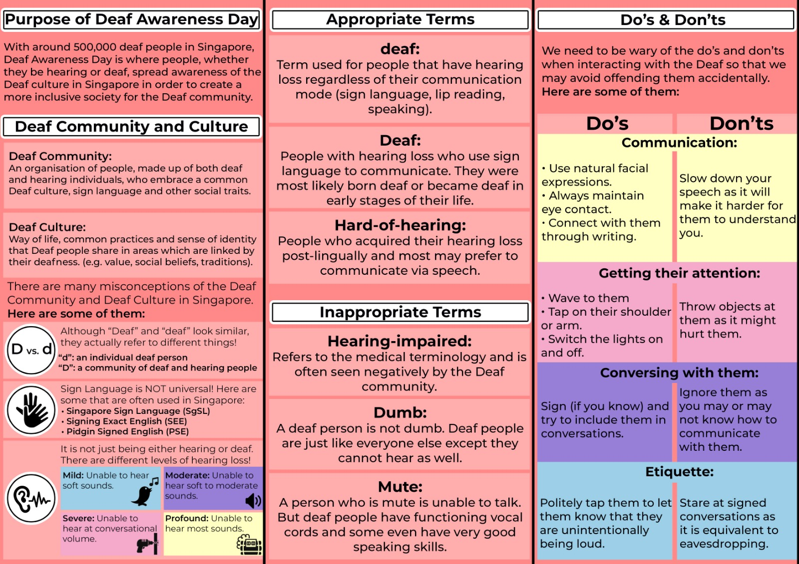

Bridging the gaps.
This role has strengthened
my ability to foster collaboration and maintain clear communication among members.
Leading interviews and selection processes for potential committee members has honed
my decision-making skills, allowing me to identify and onboard individuals aligned
with the club’s mission and values. Additionally, coordinating and participating in
community service initiatives has reinforced the importance of social responsibility,
encouraging members to give back to society.
As an instructor, I have also had the opportunity to teach basic sign language, enhancing
communication skills and promoting inclusivity within the club. These experiences have
collectively refined my leadership, organization, and interpersonal skills, shaping me
into a more confident and capable leader.
